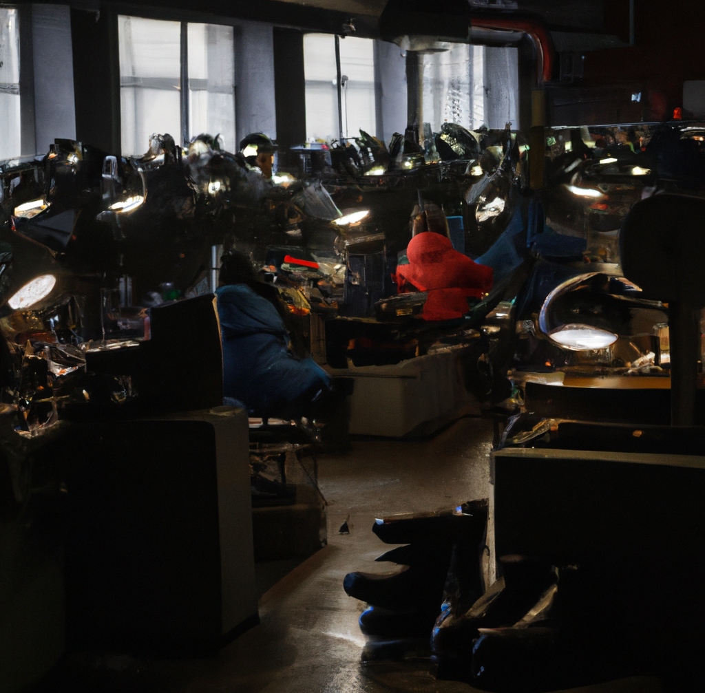
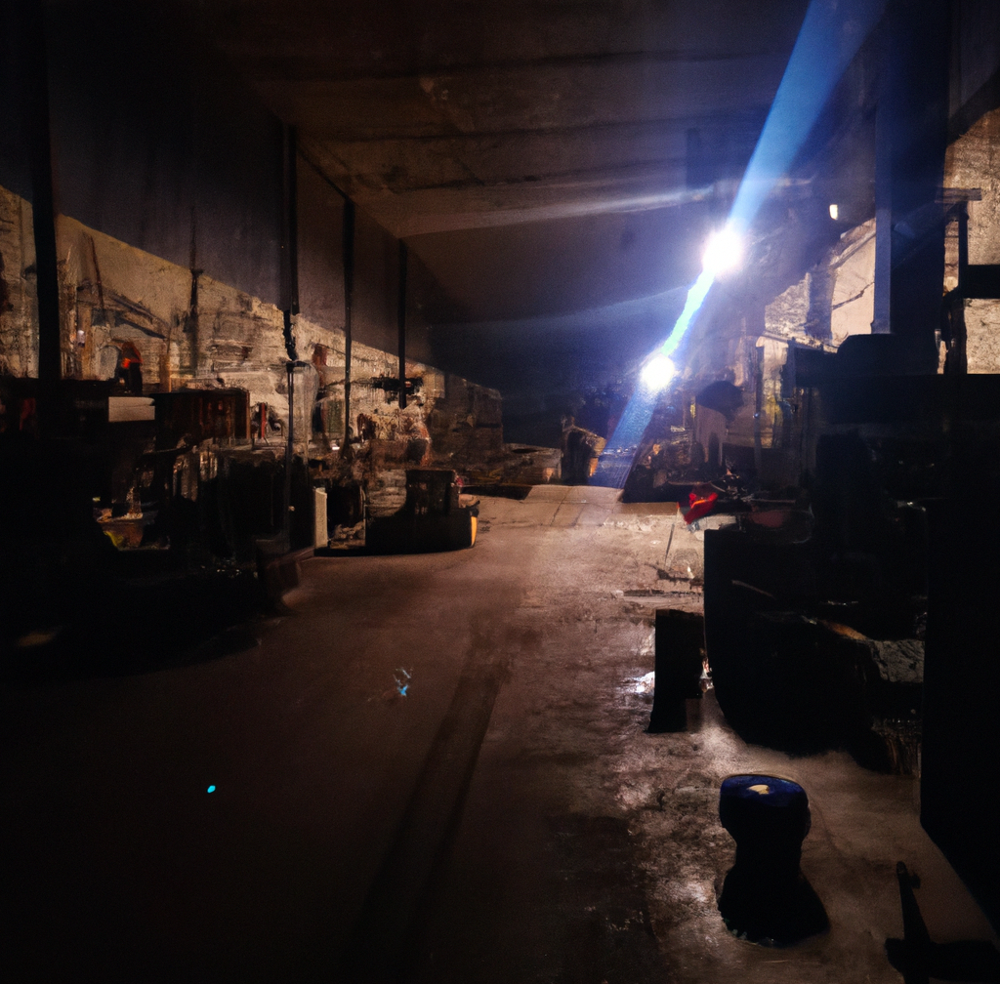

I am a vitcim of forced child labour. My father had worked in a shoe factory for as long as I could remember, and when I turned seven, the factory owner decided that I was old enough to work as well.
At first, I was terrified. I have seen the bruise marks on my father's hands when he came back home and I knew how tired he was. He would always smile at me, a young, playful child who whould just mess around all day. No matter how tired, he always smiled when he came back, because he hoped at least I'll be able to have some happiness in my life.
But one day, he didn't smile. He didn't smile at all, and he didn't smile ever since that day.
It was my seventh birthday, and it was time when the factory owner decided I was old enough to work as well.
The thought of being stuck in a factory all day was overwhelming. But... me and my father had to do whatever it took to survive. And so, every day, we went to work together, toiling away in the hot, cramped factory.
The working conditions in the factory were horrible. It was hot and cramped, and the air was thick with the smell of sweat and leather. The machines were loud and dangerous, and there were always people rushing around, trying to meet their quotas.
As a child, I was forced to work just as hard as the adults. I was given the same tasks, and I was expected to meet the same quotas. I spent my days standing at a conveyor belt, attaching soles to shoes. It was repetitive and monotonous work, and I often got tired and hungry.
But I didn't dare complain. I knew that if I didn't keep up, not only I would be fired, but also my father. And how would we eat, then? And so, I worked as hard as I could, barely stopping to rest.
I knew that we were being treated unfairly. The factory owner paid us barely enough to survive, and he didn't care about our well-being. If someone got sick or injured, they were simply replaced.
One day, my father fell ill, and instead of providing him with the help he needed, the factory owner fired him. He had taken away all of his money and threw him out on the street. We couldn't afford medical treatment, and my father's condition only got worse. Two weeks later, he simply just died.
I was mad, and I couldn't understand why the factory owner would be so heartless. I confronted him, telling him that he was responsible for my father's death. But he only laughed and told me that I was replaceable.
Enraged, I grabbed a piece of wood and swung it at him. But I was no match for his size and strength, and he easily overpowered me. He beat me down and fired me, leaving me on the brink of death.
That's where the Black Tea Mafia Family found me They took care of me and just one year later I pushed a metal ball down the factory owner's throat and watched him take his last breath.